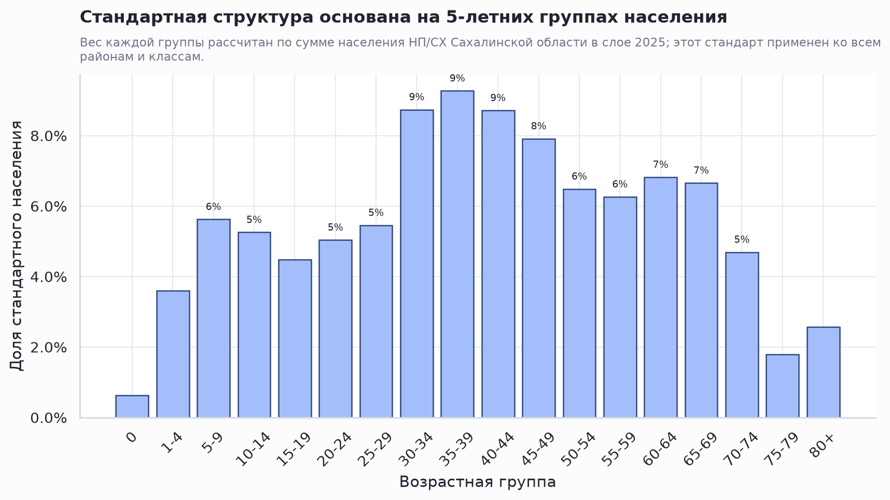
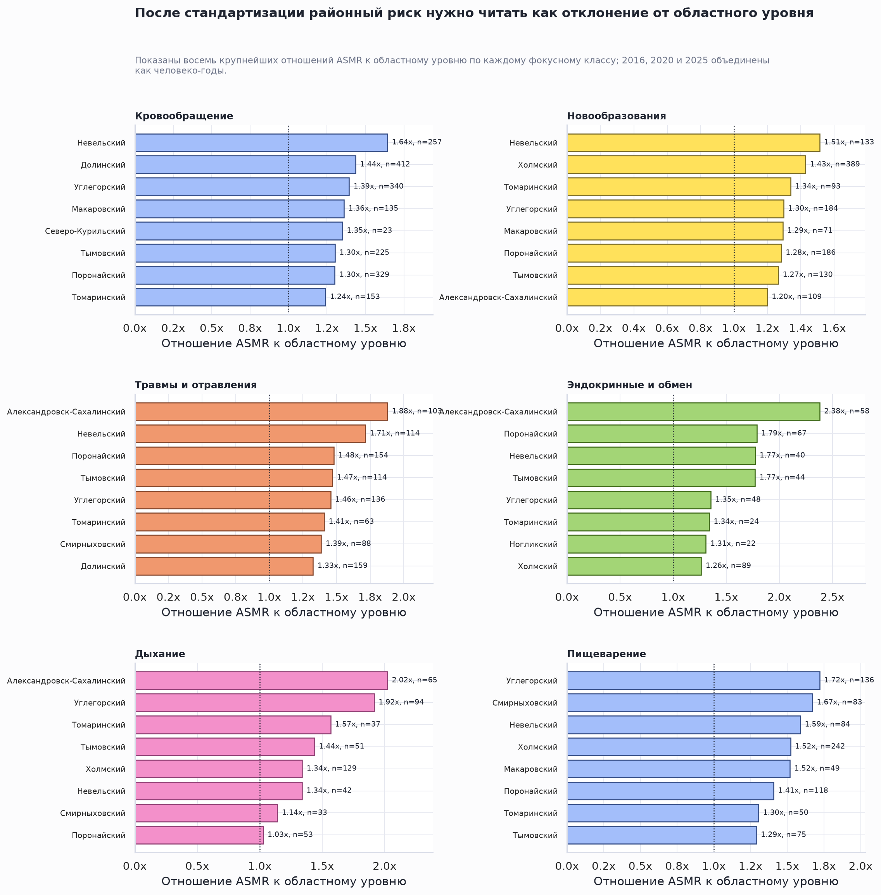
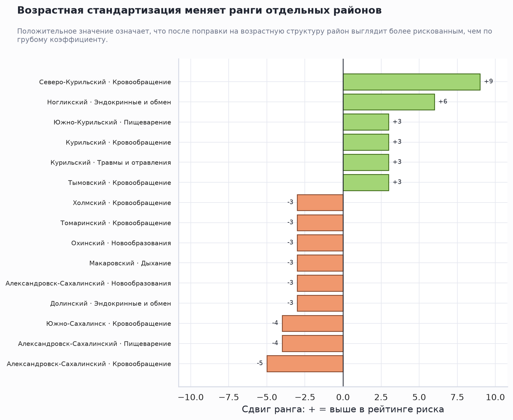
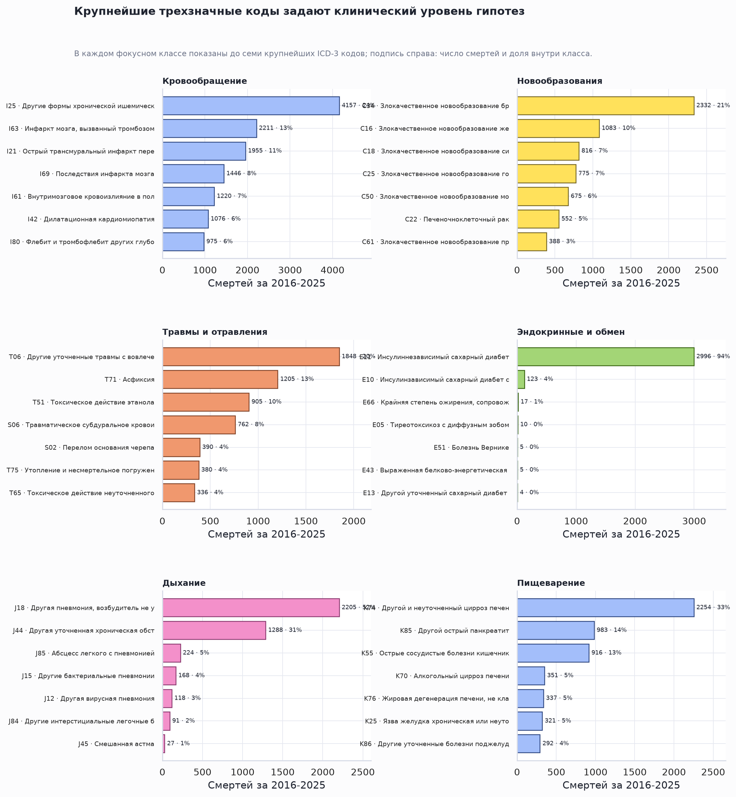
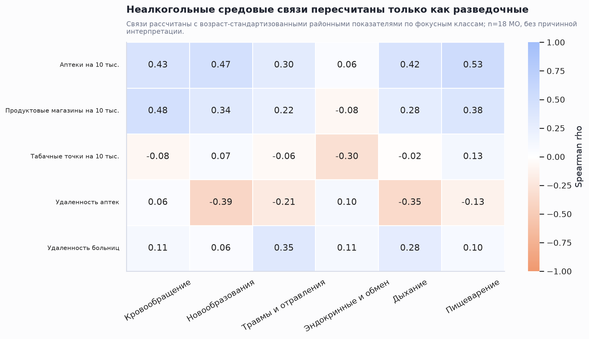

Возрастная стандартизация смертности по классам МКБ
Executive Summary
- Районные различия риска теперь нужно читать по ASMR, а не по грубым коэффициентам. Прямая стандартизация выполнена по 18 пятилетним возрастным группам населения НП/СХ; стандарт — областная возрастная структура 2025 года.
- Клинические гипотезы должны идти на уровень ICD-3 кодов. В фокусных классах IX, II, XIX, IV, X и XI большая часть нагрузки концентрируется в ограниченном числе трехзначных кодов, поэтому класс целиком слишком широк для интерпретации.
- Алкогольные выводы пока заблокированы до исправления слоя. Исправленный алкогольный слой не найден: текущий показатель alcohol_store_per_10k_prelim не включает бары и пивные магазины, поэтому содержательные алкогольные выводы не построены. После исправления его нужно отдельно сопоставлять с травмами/отравлениями, пищеварением, кровообращением и смертностью трудоспособного возраста.
Стандартизованный риск заменяет сырые районные ранги
Метрика. ASMR рассчитан как сумма возраст-специфических коэффициентов района, умноженных на областные возрастные веса. Единица измерения — смертей на 100 000 человеко-лет. Для устойчивости районного сравнения объединены якорные годы 2016, 2020 и 2025; годовые значения сохранены в отдельной таблице.


Что это меняет. Район с более старой структурой может выглядеть хуже по грубому коэффициенту, но не быть таким же экстремальным после поправки на возраст. Обратная ситуация тоже возможна: если молодой район остается высоко в рейтинге после стандартизации, это более сильный сигнал для последующей проверки факторов риска.

| Класс | Лидер по ASMR | ASMR на 100 тыс. | Отн. к области | Смертей |
|---|---|---|---|---|
| Кровообращение | Невельский | 684,7 | 1,64x | 257 |
| Новообразования | Невельский | 354,0 | 1,51x | 133 |
| Травмы и отравления | Александровск-Сахалинский | 356,9 | 1,88x | 103 |
| Эндокринные и обмен | Александровск-Сахалинский | 142,4 | 2,38x | 58 |
| Дыхание | Александровск-Сахалинский | 170,4 | 2,02x | 65 |
| Пищеварение | Углегорский | 245,0 | 1,72x | 136 |
Трехзначные коды внутри фокусных классов задают клинические гипотезы
Класс МКБ — это только верхний уровень. Для проверки клинических и средовых гипотез нужно смотреть, какие именно ICD-3 коды формируют нагрузку. Например, один и тот же класс «пищеварение» может означать разные механизмы, если нагрузку задает цирроз, язвенная болезнь или сосудистые нарушения кишечника.

| Класс | ICD-3 | Смертей | Доля класса | Медианный возраст | Мужчины | 16-64 | Типовое описание |
|---|---|---|---|---|---|---|---|
| Кровообращение | I25 | 4 157 | 24,1% | 74,0 | 52% | 23% | Другие формы хронической ишемической болезни сердца |
| Кровообращение | I63 | 2 211 | 12,8% | 72,0 | 46% | 25% | Инфаркт мозга, вызванный тромбозом мозговых артерий |
| Кровообращение | I21 | 1 955 | 11,3% | 66,0 | 66% | 46% | Острый трансмуральный инфаркт передней стенки миокарда |
| Кровообращение | I69 | 1 446 | 8,4% | 74,0 | 47% | 19% | Последствия инфаркта мозга |
| Кровообращение | I61 | 1 220 | 7,1% | 62,0 | 61% | 58% | Внутримозговое кровоизлияние в полушарие субкортикальное |
| Новообразования | C34 | 2 332 | 20,5% | 66,0 | 75% | 41% | Злокачественное новообразование бронхов или легкого, выходящее за пределы одной и более выше |
| Новообразования | C16 | 1 083 | 9,5% | 68,0 | 63% | 36% | Злокачественное новообразование желудка, выходящее за пределы одной и более вышеуказанных ло |
| Новообразования | C18 | 816 | 7,2% | 71,0 | 42% | 25% | Злокачественное новообразование сигмовидной кишки |
| Новообразования | C25 | 775 | 6,8% | 67,0 | 47% | 38% | Злокачественное новообразование головки поджелудочной железы |
| Новообразования | C50 | 675 | 5,9% | 66,0 | 1% | 45% | Злокачественное новообразование молочной железы, выходящее за пределы одной и более вышеуказ |
| Травмы и отравления | T06 | 1 848 | 20,4% | 39,0 | 92% | 95% | Другие уточненные травмы с вовлечением нескольких областей тела |
| Травмы и отравления | T71 | 1 205 | 13,3% | 41,0 | 86% | 87% | Асфиксия |
| Травмы и отравления | T51 | 905 | 10,0% | 50,0 | 77% | 86% | Токсическое действие этанола |
| Травмы и отравления | S06 | 762 | 8,4% | 48,0 | 77% | 79% | Травматическое субдуральное кровоизлияние |
| Травмы и отравления | S02 | 390 | 4,3% | 45,0 | 88% | 83% | Перелом основания черепа |
| Эндокринные и обмен | E11 | 2 996 | 94,1% | 72,0 | 32% | 18% | Инсулиннезависимый сахарный диабет с множественными осложнениями |
| Эндокринные и обмен | E10 | 123 | 3,9% | 56,0 | 58% | 62% | Инсулинзависимый сахарный диабет с множественными осложнениями |
| Эндокринные и обмен | E66 | 17 | 0,5% | 64,0 | 35% | 53% | Крайняя степень ожирения, сопровождаемая альвеолярной гиповентиляцией |
| Эндокринные и обмен | E05 | 10 | 0,3% | 61,0 | 20% | 60% | Тиреотоксикоз с диффузным зобом |
| Эндокринные и обмен | E43 | 5 | 0,2% | 74,0 | 20% | 0% | Выраженная белково-энергетическая недостаточность |
| Дыхание | J18 | 2 205 | 52,3% | 67,0 | 60% | 43% | Другая пневмония, возбудитель не уточнен |
| Дыхание | J44 | 1 288 | 30,6% | 71,0 | 67% | 25% | Другая уточненная хроническая обструктивная легочная болезнь |
| Дыхание | J85 | 224 | 5,3% | 65,0 | 75% | 49% | Абсцесс легкого с пневмонией |
| Дыхание | J15 | 168 | 4,0% | 69,0 | 61% | 39% | Другие бактериальные пневмонии |
| Дыхание | J12 | 118 | 2,8% | 71,0 | 50% | 24% | Другая вирусная пневмония |
| Пищеварение | K74 | 2 254 | 32,7% | 57,0 | 55% | 74% | Другой и неуточненный цирроз печени |
| Пищеварение | K85 | 983 | 14,3% | 60,0 | 66% | 63% | Другой острый панкреатит |
| Пищеварение | K55 | 916 | 13,3% | 76,5 | 35% | 17% | Острые сосудистые болезни кишечника |
| Пищеварение | K70 | 351 | 5,1% | 54,0 | 60% | 83% | Алкогольный цирроз печени |
| Пищеварение | K76 | 337 | 4,9% | 54,0 | 67% | 82% | Жировая дегенерация печени, не классифицированная в других рубриках |
Средовые факторы: пересчет готов, алкогольные выводы ждут исправленного слоя
Неалкогольные связи ниже являются разведочными. Они рассчитаны уже не на сырых смертях, а на возраст-стандартизованных районных показателях по фокусным классам. При n=18 МО это не доказательство причинности, а фильтр для последующих проверок.

| Фактор | Класс | rho | p | n МО |
|---|---|---|---|---|
| Аптеки на 10 тыс. | Пищеварение | 0,53 | 0,022 | 18 |
| Продуктовые магазины на 10 тыс. | Кровообращение | 0,48 | 0,043 | 18 |
| Аптеки на 10 тыс. | Новообразования | 0,47 | 0,049 | 18 |
| Аптеки на 10 тыс. | Кровообращение | 0,43 | 0,077 | 18 |
| Аптеки на 10 тыс. | Дыхание | 0,42 | 0,081 | 18 |
| Удаленность аптек | Новообразования | -0,39 | 0,106 | 18 |
| Продуктовые магазины на 10 тыс. | Пищеварение | 0,38 | 0,117 | 18 |
| Удаленность аптек | Дыхание | -0,35 | 0,153 | 18 |
| Удаленность больниц | Травмы и отравления | 0,35 | 0,160 | 18 |
| Продуктовые магазины на 10 тыс. | Новообразования | 0,34 | 0,174 | 18 |
| Табачные точки на 10 тыс. | Эндокринные и обмен | -0,30 | 0,224 | 18 |
| Аптеки на 10 тыс. | Травмы и отравления | 0,30 | 0,231 | 18 |
| Удаленность больниц | Дыхание | 0,28 | 0,252 | 18 |
| Продуктовые магазины на 10 тыс. | Дыхание | 0,28 | 0,261 | 18 |
| Продуктовые магазины на 10 тыс. | Травмы и отравления | 0,22 | 0,372 | 18 |
| Удаленность аптек | Травмы и отравления | -0,21 | 0,410 | 18 |
| Удаленность аптек | Пищеварение | -0,13 | 0,604 | 18 |
| Табачные точки на 10 тыс. | Пищеварение | 0,13 | 0,612 | 18 |
Показано 18 из 30 строк; полный набор сохранен в CSV.
Алкоголь. Исправленный алкогольный слой не найден: текущий показатель alcohol_store_per_10k_prelim не включает бары и пивные магазины, поэтому содержательные алкогольные выводы не построены. Поэтому текущий магазинный показатель нельзя использовать для вывода о доступности алкоголя. После исправления слоя первым запуском нужны четыре исхода ниже.
| Приоритет | Исход | Зачем | Готово |
|---|---|---|---|
| 1 | Травмы и отравления, ASMR за 2016/2020/2025 | наиболее прямой класс для острых алкоголь-ассоциированных смертей и внешних повреждений | True |
| 2 | Пищеварение, ASMR за 2016/2020/2025 | цирроз и другие хронические последствия алкоголя концентрируются в этом классе | True |
| 3 | Кровообращение, ASMR за 2016/2020/2025 | нужен как хронический сосудистый исход, но интерпретируется с большим числом альтернативных факторов | True |
| 4 | Все смерти трудоспособного возраста, показатель 2025 из районного слоя | отдельный срез для преждевременной смертности; использовать как вторичный исход | True |
Ограничения и следующие шаги
Возрастные знаменатели взяты из слоев НП/СХ и агрегированы до МО. Это лучше, чем три широкие группы, но население в слоях выглядит статичным между 2016, 2020 и 2025 годами; поэтому межрайонное сравнение надежнее, чем выводы о динамике возрастной структуры.
Редкие классы и малые районы требуют осторожности. В таблицах есть флаги very_low_count и low_count. Для картографирования риска лучше использовать объединенные годы или байесовское/эмпирико-байесовское сглаживание, а не одиночный год.
После исправления алкоголя нужно пересчитать отдельный блок ассоциаций: травмы/отравления, пищеварение, кровообращение и смертность 16-64 лет. Для содержательной интерпретации желательно также вынести из класса XI цирроз K74 и из XIX острые алкоголь-совместимые повреждения/отравления.
Подготовлено локально из книги смертей, слоев НП/СХ 2016/2020/2025 и районного датасета средовых факторов. Поддерживающие таблицы и графики сохранены рядом с отчетом.